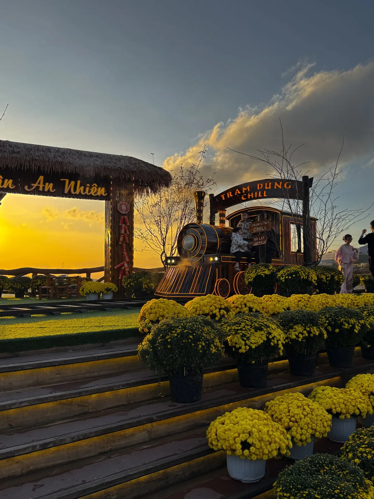
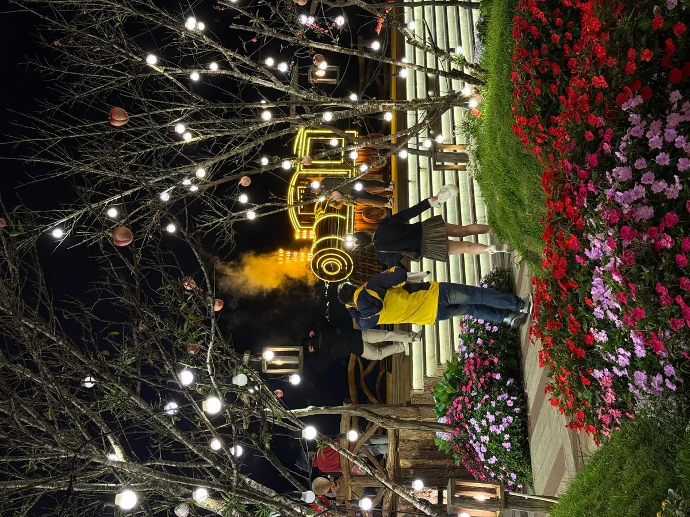
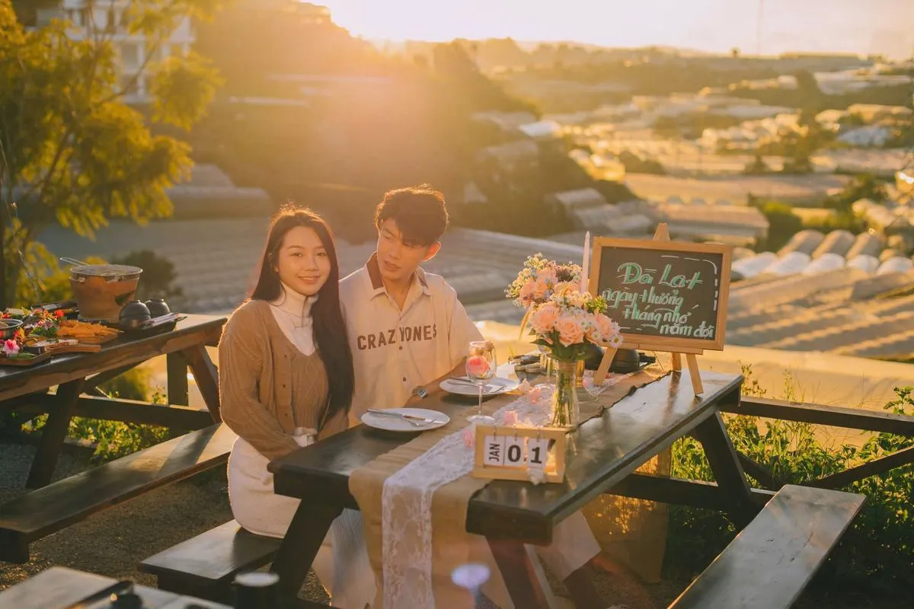

Nhà lồng Đà Lạt — "Biển sao" giữa thung lũng
Nhà lồng Đà Lạt (hay nhà kính) là hệ thống nhà kính trồng hoa và rau của nông dân. Đà Lạt có hàng chục ngàn nhà lồng trải dài khắp các thung lũng. Mỗi đêm, khi đèn trong nhà lồng bật lên để kích thích cây trồng, toàn bộ thung lũng biến thành "biển sao" lung linh — hiện tượng mà chỉ Đà Lạt mới có.
Ngắm biển sao nhà lồng ở đâu đẹp nhất?
Địa điểm lý tưởng nhất để ngắm view nhà lồng Đà Lạt là từ trên cao — nơi bạn có tầm nhìn rộng xuống thung lũng. Trạm Dừng Chill nằm ở vị trí "vàng" trên đồi cao, nhìn thẳng xuống thung lũng nhà lồng. Từ 19h trở đi, đèn nhà lồng bắt đầu lên — cả thung lũng sáng lấp lánh!

3 giai đoạn ngắm nhà lồng tại Trạm Dừng Chill
17:00-18:00: Hoàng hôn buông xuống, ánh nắng vàng chiếu qua nhà lồng tạo hiệu ứng ánh kim.
18:00-19:00: Trời chạng vạng, xe lửa cổ chạy qua, nhà lồng bắt đầu lên đèn từ từ.
19:00-23:00: "Biển sao" lung linh rực rỡ nhất! Hàng ngàn đèn nhà lồng sáng trắng, vàng, tím xen kẽ tạo nên quang cảnh mê hồn.

Nướng BBQ ngắm biển sao — Trải nghiệm chỉ có tại Đà Lạt
Tưởng tượng bạn ngồi ngoài trời 18°C, tay cầm que nướng thịt thơm phức, trước mắt là hàng ngàn ánh đèn nhà lồng lấp lánh như sao sa. Đây là trải nghiệm quán nướng Đà Lạt view nhà lồng mà nhiều du khách gọi là "khoảnh khắc đáng nhớ nhất chuyến đi".

Mùa nào view nhà lồng đẹp nhất?
Nhà lồng Đà Lạt sáng đèn quanh năm, nhưng đẹp nhất vào mùa khô (tháng 11-4) khi trời trong, ít mây che. Mùa mưa, sương mù có thể che một phần view nhưng lại tạo hiệu ứng "đèn trong sương" huyền ảo riêng.
Kết luận
View nhà lồng Đà Lạt là trải nghiệm thị giác mà không hình ảnh nào diễn tả hết được — phải đến tận nơi để cảm nhận! Đặt bàn tại Trạm Dừng Chill và chọn vị trí nhìn thẳng xuống thung lũng để ngắm biển sao đẹp nhất.